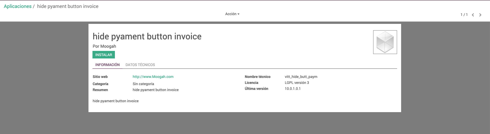

<section class="oe_container">
    <div class="oe_row oe_spaced">
        <div class="oe_span12">
            <h2 class="oe_slogan">Moogah - Add-ons mejoras</h2>
            <p class="oe_mt32">
                Este app incluye la funcionalidad que permite esconder el bot&oacute;n de "Registrar Pago":<br>  - No necesita configuración, solo la instalaci&oacute;n del app.<br> - Si se des-instala el app, es necesario actualizar el app de Pagos en Grupo para recuperar el botón en la vista de las facturas.<br><br>
            </p>
            
            <h3 class="oe_slogan">Fácil instalaci&oacute;n</h3>
        </div>
		<div class="oe_span12">
			<div class="oe_row_img oe_centered">
				
			</div>
        </div>
    </div>
</section>

